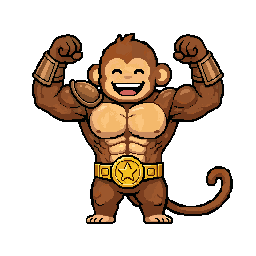
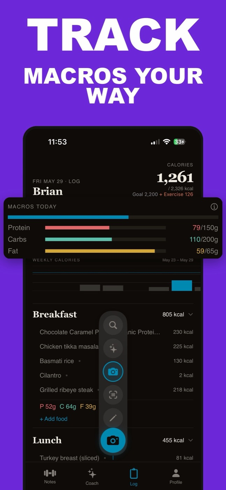
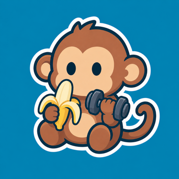

The fastest workout log app for iPhone
Type your workout like a note — Monolift turns it into sets, reps, and PRs. Hold a number and slide to log a set in about 2 seconds. No keyboard, no five-screen forms, no social feed. A lift log built for people who went back to Apple Notes because every gym app was slower than typing.
Download on theApp Store2 sec a setdrag-to-dial loggingauto PRs & chartsAI coachno social feed
Chest and Back Day — today
Bench Press
Incline Dumbbell Press
hold any number, slide to change it — that's the whole app

On the App Store now
Monolift is a lift log for iPhone (iOS 17 or later). Download it, type your next workout like a note, and watch it turn into pills, charts, and PRs — with a coach and a monkey keeping score.
No Android or web version — Monolift is iPhone-only.
A gym notes app that grew a brain
Your workout is a plain-text note that renders into data — tappable sets, automatic PRs, progress charts, and a coach (plus one monkey) watching the numbers.





Three steps. Two seconds a set.
Monolift works like the plain-text workout log you already keep — in Apple Notes, a notebook, or a spreadsheet — minus the part where the data goes nowhere.
Type it like a note
Write your workout the way you'd text it. A colon marks the exercise, commas separate sets. Monolift live-renders it into structured cards with tappable weight and rep pills.
Bench Press: 225 lbs 8, 8, 6
Hold & slide to log
Long-press any number and drag to change it — plate-by-plate steps, a haptic tick per step, no number pad. Rest timers run on your Lock Screen so you never unlock mid-set.
225 → 230 → 235 · ~2 sec/set
Progress tracks itself
Every set feeds per-exercise charts and automatic PR detection. The AI coach reads your history, flags plateaus, and suggests deloads. Banaño ranks up while you do.
PR · 235 lbs × 6 · chart updated
Meet Banaño
The log is the product. Banaño is the reason you open it on the days you'd rather skip. He ranks up when you train and log — and gets dramatically sad when you don't.
"I'm hangry, peel me."
Banaño · when you skip food logs"Legs deceased. RIP."
Banaño · after leg day"You forgot me again 💔"
Banaño · when you stop loggingHunger drops if you skip food logs. Energy drops if you skip training. Strength only goes up. He lives on your home-screen widget, and your private Squad keeps a group streak — so nobody lets the monkey down alone.
Guides for lifters
Honest answers to the questions lifters actually search — how to log, what to switch to, and when to back off. No fluff, written by the people who built a lift log.
How to Log Your Workouts: What to Track and the Fastest Way to Do It
What to record, and the simple system that actually sticks.
Read the guide → SwitchingHevy vs Strong: Which Lifting App Should You Actually Use?
The honest head-to-head — and when neither is the right pick.
Read the guide → From Notes & paperFree Apple Notes Workout Templates (Copy-Paste PPL, Upper/Lower, Full Body)
Genuinely useful templates — and the ceiling you'll hit with them.
Read the guide → SwitchingThe Best Strong App Alternatives for Lifters on iPhone
What to use if Strong stopped working for you — and how to export your data first.
Read the guide → SwitchingThe Best Hevy Alternatives for Serious Lifters
The best replacements if the feed and the taps got old.
Read the guide → SwitchingThe Best Workout Tracker Apps for iPhone, Actually Tested
Hevy, Strong, Jefit and more — with honest when-each-wins verdicts.
Read the guide → From Notes & paperPaper Gym Notebook vs Workout App: An Honest Comparison
Paper is fast. Here's what finally beats it.
Read the guide → From Notes & paperWorkout Spreadsheet vs App: Which Tracks Training Better?
When to keep the sheet — and when to retire it.
Read the guide → TrainingHow to Track Progressive Overload: PRs, Charts, and the 2-for-2 Rule
How to know your numbers are actually going up.
Read the guide → TrainingWhen to Deload: Signs of a Plateau (and the App That Flags It)
The stall signals hiding in your own log — and who should read them.
Read the guide → FeaturesAI Fitness Coach vs ChatGPT: Which Should Program Your Training?
Chatbots write decent programs. They've never seen your sets.
Read the guide → FeaturesGamified Workout Apps: Streaks, Pets, and Ranks That Don't Ruin Your Log
Making consistency a game — without dumbing down the tracking.
Read the guide →Questions lifters ask
Is Monolift free?
Monolift is free to download with a full-featured 7-day trial — log workouts, track macros, use the AI coach, everything. After the trial it's $39.99/year or $9.99/month; Apple shows the price before you subscribe, and if you cancel during the trial you pay nothing. There's no free-forever tier, and we'd rather tell you that here than surprise you on day 8.
What's the fastest way to log workouts at the gym?
Anything that doesn't make you type between sets. In Monolift you write your workout like a note, then hold a number and slide to change weight or reps — about 2 seconds a set, no keyboard. Learn more: how to log your workouts →
How does Monolift compare to Hevy and Strong?
Hevy and Strong log workouts through structured forms — pick an exercise, tap into fields, save. Monolift is built around speed: plain-text notes that render into sets, and drag-to-dial logging with no keyboard. No social feed either. Learn more: Hevy vs Strong →
Is Monolift a good alternative to the Strong app?
If you liked Strong's minimalism but want faster logging, yes — you rebuild your routine by typing it as plain text in a few minutes, then log every set by sliding a number. Learn more: the best Strong alternatives →
Is Monolift a good alternative to Hevy?
If you don't need a public feed, Monolift trades Hevy's social layer for the fastest set logging on iPhone — plus private Squad streaks with people you actually lift with. Learn more: the best Hevy alternatives →
Can I keep logging workouts the way I do in Apple Notes?
Yes — that's the whole idea. Type Bench Press: 135 lbs 8, 8, 6 exactly like
you would in Notes, and Monolift renders it into tappable sets with automatic charts
and PRs. Learn more: Apple Notes workout templates →
Is logging in an app really as fast as a paper gym notebook?
Writing "225×8" on paper takes about two seconds. So does holding a number and sliding in Monolift — except the app also gives you progress charts, PR detection, and a Lock Screen rest timer. Learn more: gym notebook vs app →
Can Monolift replace my training spreadsheet?
If the spreadsheet exists so you can see progress over time, yes — per-exercise charts and PR tracking are automatic, and entering data is typing a note instead of editing cells on a phone. Learn more: spreadsheet vs app →
What should I record in my workout log?
Exercise, weight, and reps for every working set — plus optional notes like RPE or cues ("go slower"). That's enough to see progressive overload. Monolift captures all of it from one typed line. Learn more: what to track and why →
Does Monolift track PRs and progressive overload automatically?
Yes. Every set you log updates per-exercise charts and flags weight and rep PRs — no extra bookkeeping. Learn more: how to track progressive overload →
Can Monolift tell me when I've hit a plateau or need a deload?
The AI coach (a Pro feature) reads your recent sessions, flags stalls, and suggests deloads based on your actual numbers — not a generic template. Learn more: when to deload →
What can Monolift's AI coach do that ChatGPT can't?
See your training. The coach reads your real log, so it can build a session from your actual lifts, save it into your notes, and answer "how's my bench progressing?" with your own chart. Learn more: AI coach vs ChatGPT →
How do Monolift's monkey buddy and streaks work?
Banaño, your gym monkey, levels through five ranks as you log workouts and food — and his stats decay when you skip. Squads add a private group streak with friends. It's seasoning on top of a serious log, not the point. Learn more: gamified workout apps →
Why pick Monolift over other iPhone workout trackers?
One reason: logging speed. A tracker only works if you use it every session, and you only use the one that doesn't slow the workout down. Learn more: the best iPhone workout trackers, tested →
Is Monolift available on Android or the web?
No — Monolift is iPhone-only (iOS 17 or later), on the US App Store. There's no Android or web version.
Does Monolift work with Apple Watch or sync with Apple Health?
Not today — there's no Watch app and no automatic Apple Health sync. Monolift is built so logging on the phone itself takes about 2 seconds a set, no wrist required.
Does Monolift have a social feed?
No public feed. Squads are private: you invite the people you lift with, share workouts, send kudos, and keep a group streak. Nobody performs for strangers.
Are Monolift's photo calorie counts exact?
No — they're instant estimates. Snap a photo or describe a meal and you get estimated calories and macros in seconds; use barcode scan or the USDA database when you want label-level precision.
How long should you rest between sets?
Rough guide: 2–5 minutes for heavy strength work, 60–90 seconds for hypertrophy ranges. Monolift's rest timers run as Live Activities on your Lock Screen, so you don't unlock your phone to check.

Stop tapping.
Start lifting.
Your next workout takes the same effort as typing a note — and this time the numbers go somewhere.
Download on theApp StoreiPhone · iOS 17+